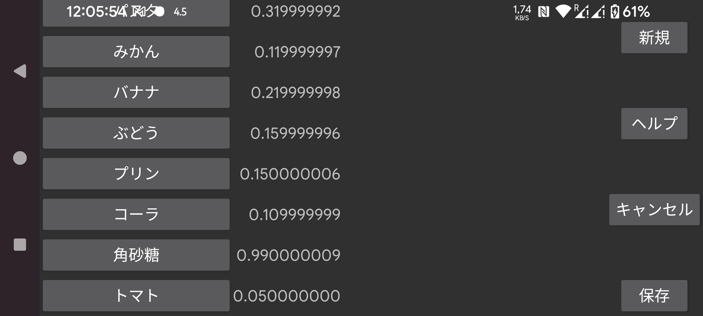

ショートカットは Kerfstok で使用できます。
ウォッチの数値入力画面でショートカット画面に進めます(私の Vivoactive 3 ウォッチでは左にスワイプ)。そこにラベルの一覧が表示され、いずれかを押すと対応する値が数値画面に挿入されます。値は数値、または数値と組み合わせた算術演算子(例えば 0.5 を掛けるには *0.5)が指定できます。
この設定メニューでは、これらのショートカットを作成、削除、編集できます。
既存のショートカットの一覧が左側に表示され、いずれかをタッチするとショートカットの削除、ラベルや値の変更ができる画面が表示されます。
新しいショートカットは 新規 で作成します。
変更は 保存 ボタンを押した後にのみ保存されます。